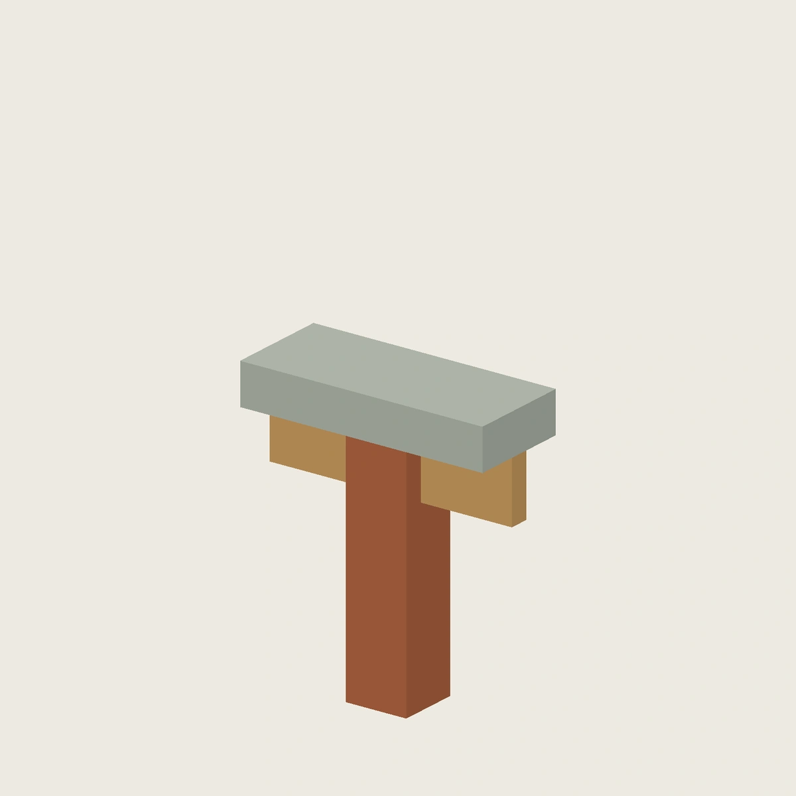
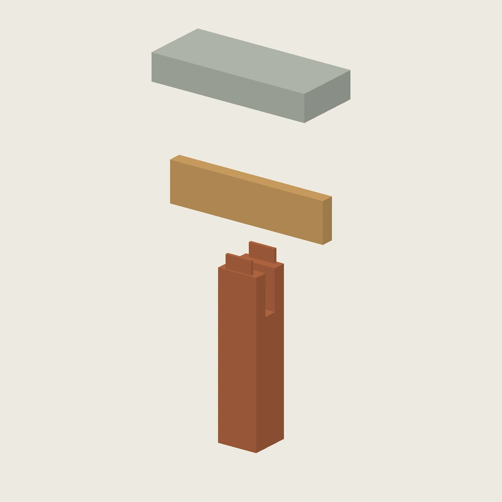
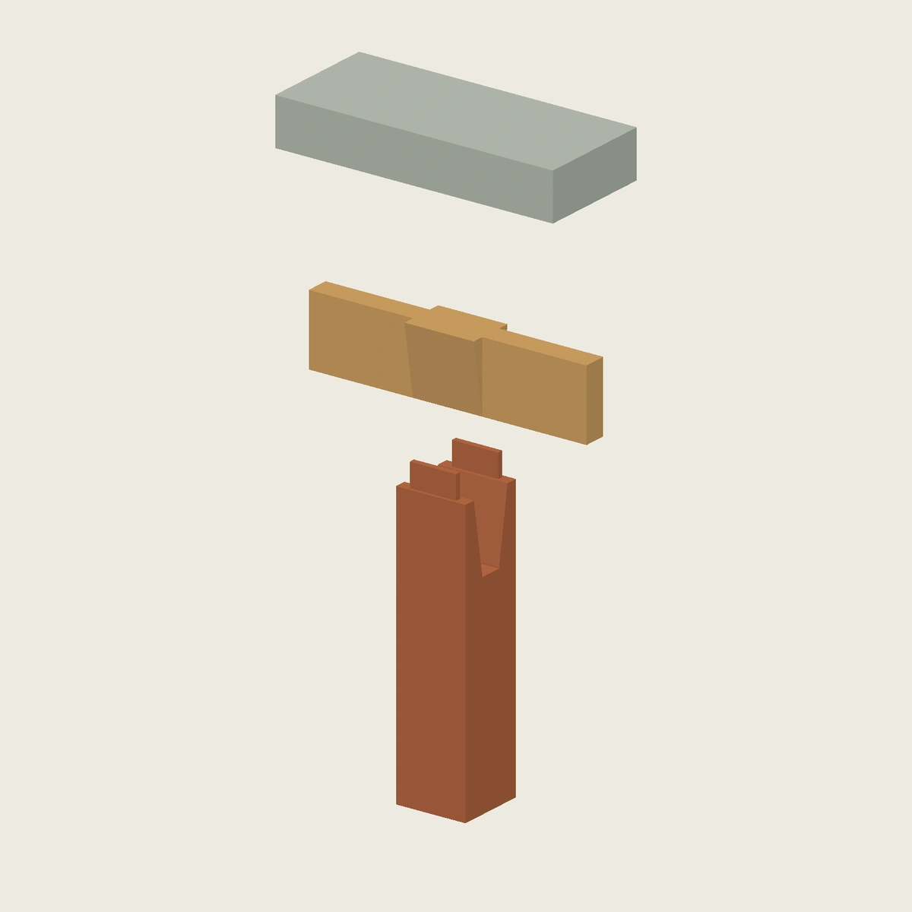

FreeCAD 是本地主模型
两套节点已转换为 FreeCAD 原生参数化母版，采用参数表、约束草图及 PartDesign 拉伸 / 切除，不是导入 STEP 后改存后缀。模型已完成保存、重新打开、重算和选定参数的修改测试。
本页仅发布静态渲染和检查摘要；原生母版、精确参数、STEP/STL/GLB 及详细报告留在本地忽略目录。Onshape 仅为可选同步，本轮没有上传。状态仍为 DRAFT，尚无实物试打。
夹头 · 水平槽底


| 检查 | 结果 |
|---|---|
| 有效单实体 | 3 |
| 完全约束草图 | 6 |
| 改参 / 恢复测试 | 6 次通过 |
| 保存后重新打开并重算 | 通过 |
| 网格水密与绕向 | 通过 |
| 装配采样 | 146 个位置，步长 1 mm；未发现体积相交 |
| 越过停止位置的负对照 | 发生预期干涉 |
上述结果仅针对本轮默认几何与明确测试的改参情形。离散采样不是连续扫掠证明，数字接触不代表打印配合或承载通过。
插肩 · 双斜肩教学变体

| 检查 | 结果 |
|---|---|
| 有效单实体 | 3 |
| 完全约束草图 | 7 |
| 改参 / 恢复测试 | 5 次通过 |
| 保存后重新打开并重算 | 通过 |
| 网格水密与绕向 | 通过 |
| 装配采样 | 146 个位置，步长 1 mm；未发现体积相交 |
| 越过停止位置的负对照 | 发生预期干涉 |
上述结果仅针对本轮默认几何与明确测试的改参情形。离散采样不是连续扫掠证明，数字接触不代表打印配合或承载通过。
本地怎么改
- 用 FreeCAD 打开本地母版，不要从网页网格逆向修改。
- 双击树中的“00 · 参数表”，编辑 B 列的参数值；重算后检查三个 Body 及其草图、拉伸和切除特征。
- 另存为新版本，重新导出并检查。旧的报告和静态图不会因手工改尺寸而自动有效。
原始 FeatureScript 与 CadQuery 重建保留为历史对照，不再是本轮母版。完整桌架、正交牙条、打印取向和实物实验仍待后续完成。
发布前仍需审计历史
仓库已有历史 CAD 被跟踪，新增忽略规则无法撤回这些内容。新的本地母版不增加公开下载入口；历史清理与仓库可见性需单独决定。